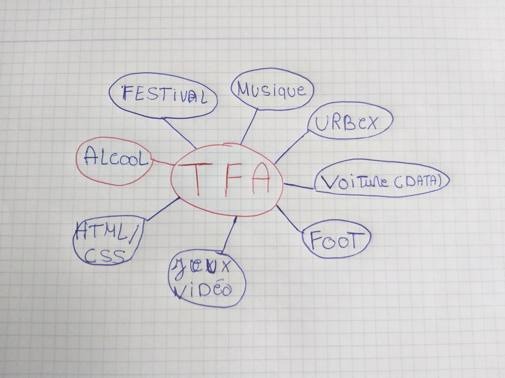
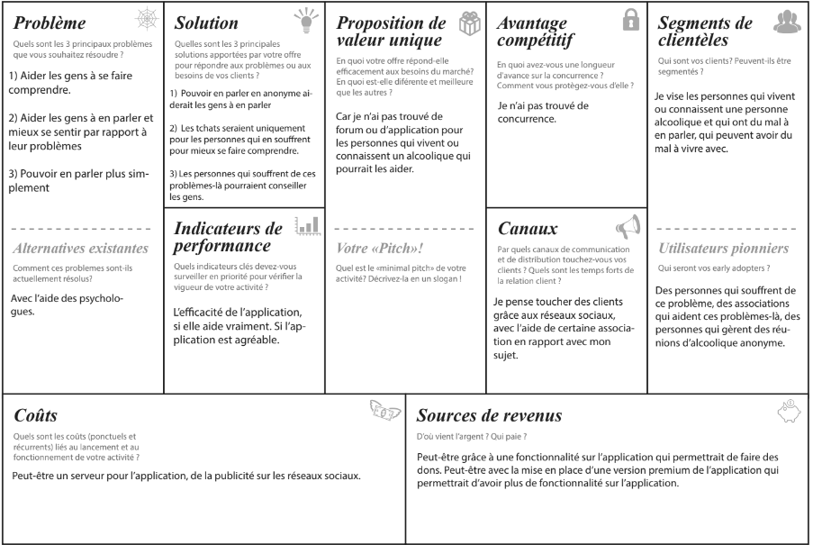
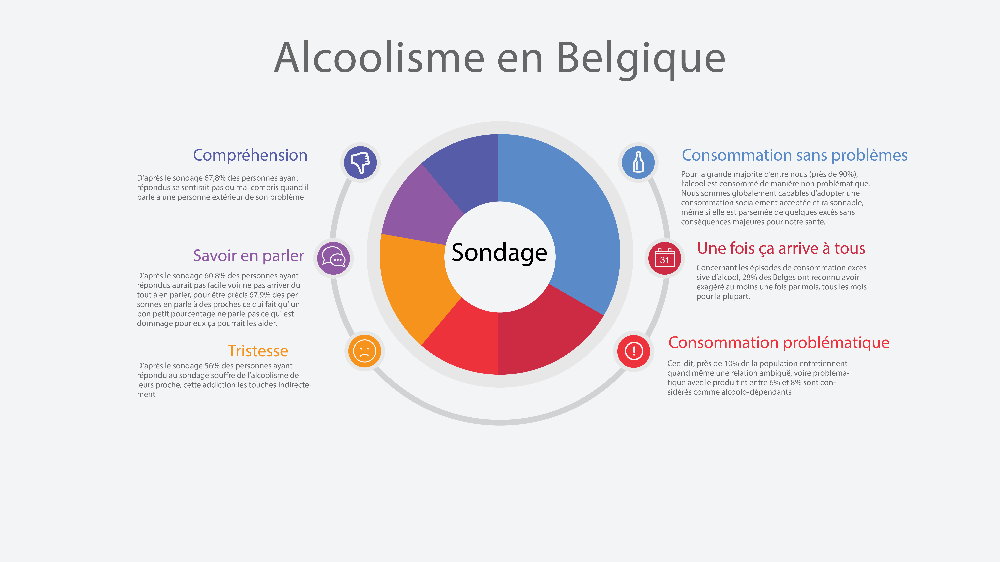
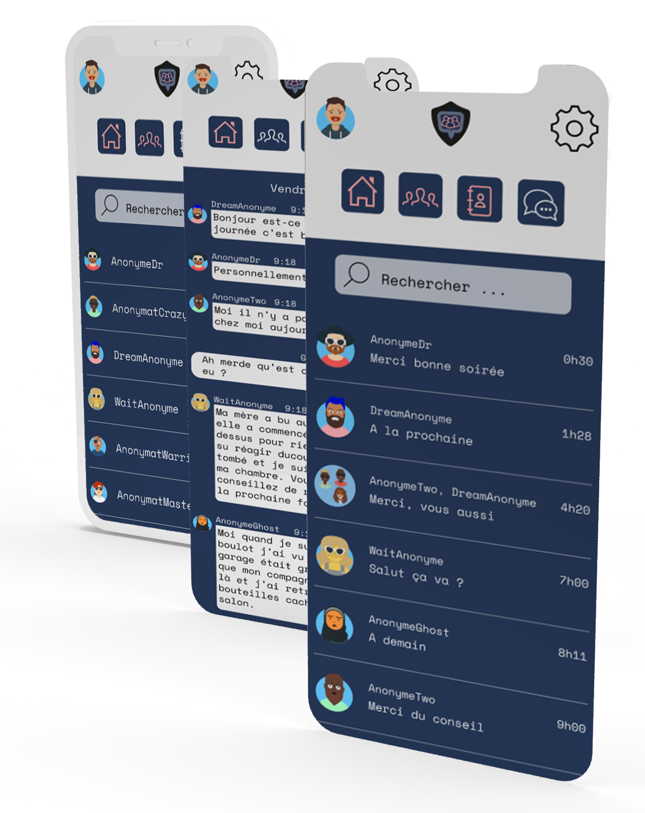
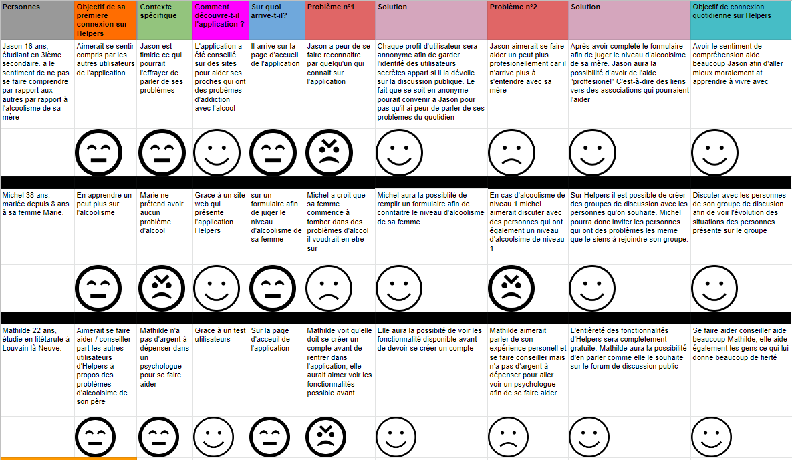
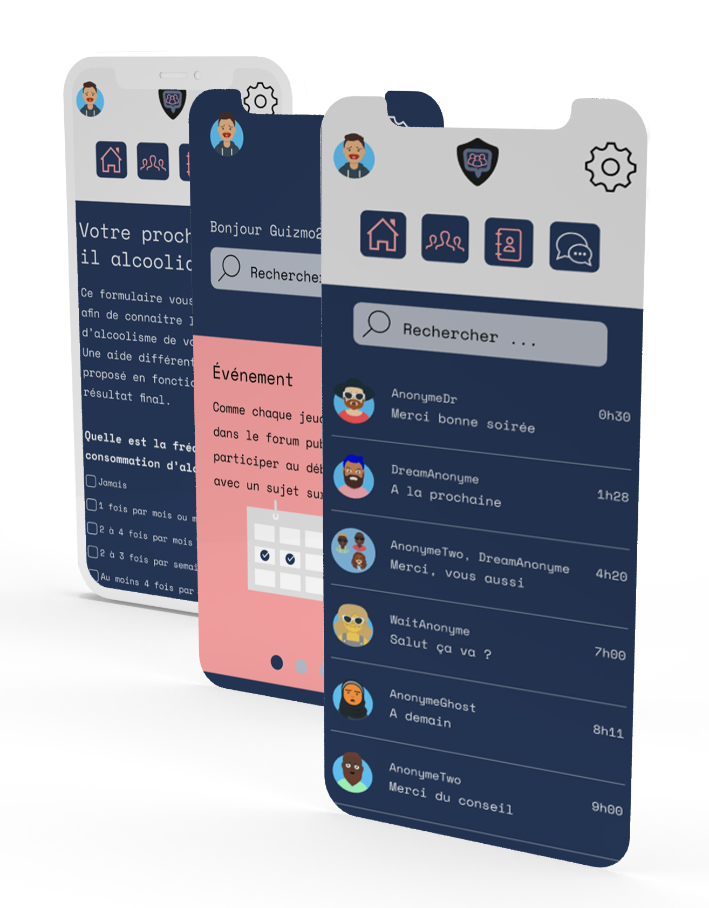
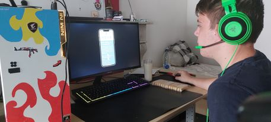
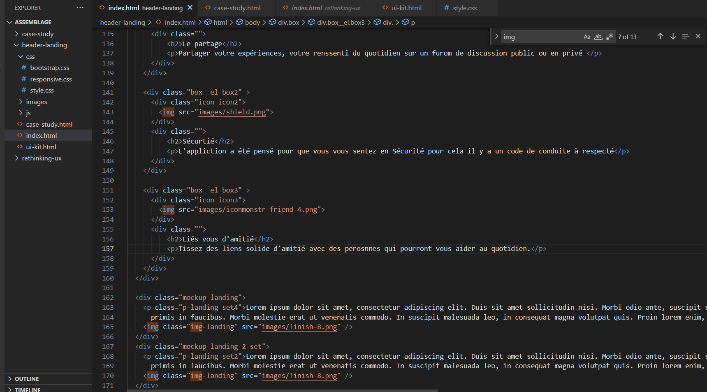

Trouver un sujet qui m’était intéressant n’était pas une tâche simple, mes premières idées était de trouver un sujet en rapport avec une de mes passions c’est-à-dire le foot ou la musique. Mais je n’ai rien trouvé de concret puis au premier cours de madame Latour elle a dit de regarder à une de nos problématique du quotidien.
C’est pourquoi j’ai décidé de me focaliser sur une problématique de mon quotidien et d’émettre une hypothèse que les personnes qui étaient touchés par les mêmes problèmes que moi seraient intéressés par une application qui les aiderait à mieux se faire comprendre par rapport à leurs problèmes, se faire aider par les autres utilisateurs, pouvoir en parler avec plus de facilité.

Lean canvas
Après avoir trouvé un sujet j’ai complété un lean canvas. Oui mais c’est quoi ?
Un Lean Canvas est un outil très simple et très utile qui nous permet de mettre en place notre projets, ça permet aussi de faire des changements si nécessaire en fonction des retours lors de test utilisateurs et parfois même effectuer un pivot c'est-à-dire de complètement changer la direction de notre projet.

Suis-je le seul ?
J’ai décidé de créer un formulaire ce qui m’aiderait à savoir ce qui me permettrait de savoir si les personnes étaient intéressées par l’application pensée. Lors de la création de ce formulaire je me suis demandé comment j’allais pouvoir toucher mon public cible, grâce à ma sœur qui a travaillé au cœur de ce sujet j’ai pu aller voir les personnes qui était touché par l’alcoolisme et leur demander d’envoyer ce formulaire à leurs proches. Dans le formulaire j’avais laissé une question ouverte pour savoir pourquoi ils utiliseraient cette application.

Résultat du graphique en sondage
Les utilisateurs
Une solution
Avec le formulaire j’ai pu en conclure que la compréhension, l’aide et potentiellement l’anonymat étaient des points importants pour les utilisateurs. j’ai donc voulu concevoir une application qui aide les gens à parler des problèmes d’alcoolisme de leurs proches avec plus de facilité, c’est-à-dire en anonyme pour éviter la peur de se faire reconnaître.

User Journey
Avec le formulaire j’ai pu en conclure que la compréhension, l’aide et potentiellement l’anonymat étaient des points importants pour les utilisateurs. j’ai donc voulu concevoir une application qui aide les gens à parler des problèmes d’alcoolisme de leurs proches avec plus de facilité, c’est-à-dire en anonyme pour éviter la peur de se faire reconnaître.

*défilez horizontalement
C’est en partie avec l’aide de mes User Journey que mon projet a pu évoluer au fur et à mesure afin de répondre un maximum au besoin des utilisateurs
La création
MVP
Ensuite il a fallu créer un MVP c’est-à-dire le produit minimum viable c’est très pratique afin d’avoir des retours des utilisateurs le plus rapidement possible. Pour ce faire j’ai utilisé l’application Figma, je ne me suis peut-être pas rendu la tâche la plus simple car depuis le début de l’année j’utilisais Adobe xd. Au début ce n’était pas évident mais on s’y retrouve vite.
Je voulais que mon prototype soit le plus intéractif possible, ce n'était pas toujours possible avec ce que je voulais faire. J’avais pas mal d'idées possibles pour mvp mais après en avoir pas mal parlé avec mes professeurs, j’ai décidé de me focaliser sur ce qui était vraiment utile et nécessaire pour l’utilisateur.

Plusieurs changements
Après avoir montré mon mvp aux professeurs, j’ai dû corriger pas mal d'erreurs que j’ai pu commettre, revoir certains points vu en cours. C’est un mal pour un bien, cela m’a permis de voir les lacunes de mes prototypes et de pouvoir les corriger et de me motiver davantage.
Je me suis rendu une seconde fois à l’asbl afin de montrer mes prototypes afin d’avoir des retour de professionnel du millieux, ils m'ont conseillé de revoir le formulaire pour juger l’alcoolisme de son proche car il le formulaire n’étais pas diriger vers les bonne personnes, je m’explique un proche n’aurait pas pu compléter ce formulaire il fallait être dans la tête de la personne. Ils m’ont conseillé de regarder des formulaires qu’on pouvait retrouver en ligne et de me baser sur ceux-là.
Test utilisateur
Après avoir finalisé les petits détails de mon MVP il était primordial de le faire tester pour ça j’ai envoyé le prototype à 4 personnes qui étaient le public cible qui ont répondu au formulaire et j’ai demandé à 4 personnes qui ne faisaient pas partie du public cible afin d’avoir un avis extérieur.
Leurs retours étaient pour la plupart très positifs, l’application est simple à prendre en main sauf pour la page d'accueil de l’app, c’est ce qui est principalement revenu. Il ne la trouvait pas assez claire, il n’était pas sûr sur quoi il allait arriver après avoir cliqué sur quelques boutons. J’ai donc décidé revoir la page d'accueil et c’est vrai qu’elle est beaucoup plus libre d’accès.Ils m’ont aussi dit d'agrandir certains éléments car ils étaient trop petits, et c’est vrai que certains éléments était super petit et plus grand cela rend beaucoup mieux.
En conclusion je pense que ces test utilisateurs ont été très bénéfiques dans l’avancée de mon travail, ils m’ont permis de voir certains points qu’ils n’allaient pas sur l’application c’était à moi de les corriger pour faire évoluer mon projet au fur et à mesure afin de répondre un maximum au besoin des utilisateurs.

Le futur de Helpers
Il est important de voir le projet évoluer, et il est clair qu'à l’heure actuelle Helpers manque certainement de petit détails. Mais les personnes ayant pu tester le MVP ont compris l'hypothèse qu’il y avait et le cheminement pour y arriver. Il n’est pas impossible qu’Helpers voit plusieurs forum de discussion ouvert sur de nouvelle thématique par exemple, sur l’addiction comme la drogue, ou le burn-out.
Le web
Après avoir conçu les prototypes de l'app, il fallait bien penser à le présenter correctement. j’avais envie de faire un site web avec des nouvelles technique des choses que je n’avais encore jamais fait, j’avais envie de me challenger je voulais être fier de mon travail global, fier de le présenter le jour de la présentation. Avant de commencer à penser au design de mon site j’ai d’abord pensé au contenu de mon site afin de pouvoir les tester directement lors de mes prototypes. il m’a fallu quelques prototypes avant d’arriver à celui qui me plaisait vraiment.
Après avoir fini de designer mon site, je me mets à le coder, ce n’est pas une tâche facile au vu du challenge que je me suis imposé. J’ai rencontré quelques soucis….À COMPLÉTER

Conclusion
Ce projet a été très bénéfique pour moi, j’ai appris à entreprendre un projet avec une méthode de travail bien précise qui est nommée “Learn Startup” cela m'a permis de concevoir, faire tester et avoir des retours de la part des utilisateurs le plus rapidement possible pour changer ce qui n’allait pas. Travailler en collaboration avec mon public cible et adapter les fonctionnalités en fonction de leurs besoins était très enrichissant, je me suis rendu compte de l’importance des tests utilisateurs, c’était une étape indispensable.
Le tfa m’a permis d'avoir un travail plus efficace dans nos démarches et à me remettre sans cesse en questions.